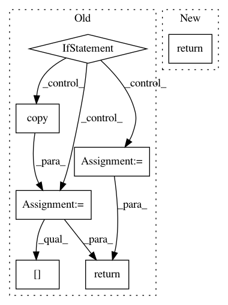

9d9ef625dccb7ba0ed3295f18d90de9d6dd59469,nussl/audio_signal.py,AudioSignal,__sub__,#AudioSignal#,860
Before Change
def __sub__(self, other):
self._verify_audio(other, "subtract")
if self.signal_length > other.signal_length:
combined = np.copy(self.audio_data)
combined[:, :other.signal_length] -= other.audio_data
else:
combined = np.copy(other.audio_data)
combined[:, :self.signal_length] -= self.audio_data
return AudioSignal(audio_data_array=combined)
def _verify_audio(self, other, op):
if self.num_channels != other.num_channels:
raise Exception("Cannot " + op + " with two signals that have a different number of channels!")
After Change
return self.add(other)
def __sub__(self, other):
return self.subtract(other)
def _verify_audio(self, other):
if self.num_channels != other.num_channels:
In pattern: SUPERPATTERN
Frequency: 4
Non-data size: 7
Instances
Project Name: interactiveaudiolab/nussl
Commit Name: 9d9ef625dccb7ba0ed3295f18d90de9d6dd59469
Time: 2017-04-04
Author: ethanmanilow@gmail.com
File Name: nussl/audio_signal.py
Class Name: AudioSignal
Method Name: __sub__
Project Name: interactiveaudiolab/nussl
Commit Name: 9d9ef625dccb7ba0ed3295f18d90de9d6dd59469
Time: 2017-04-04
Author: ethanmanilow@gmail.com
File Name: nussl/audio_signal.py
Class Name: AudioSignal
Method Name: __add__
Project Name: neurodsp-tools/neurodsp
Commit Name: f24d4e7ec36b2e78050b1e7d8baa260b79b56954
Time: 2020-06-26
Author: tdonoghue@ucsd.edu
File Name: neurodsp/utils/norm.py
Class Name:
Method Name: demean
Project Name: neurodsp-tools/neurodsp
Commit Name: 05966ac8cb56a0f49880bac5c16b2e9b2987718d
Time: 2020-07-18
Author: tdonoghue@ucsd.edu
File Name: neurodsp/utils/norm.py
Class Name:
Method Name: demean